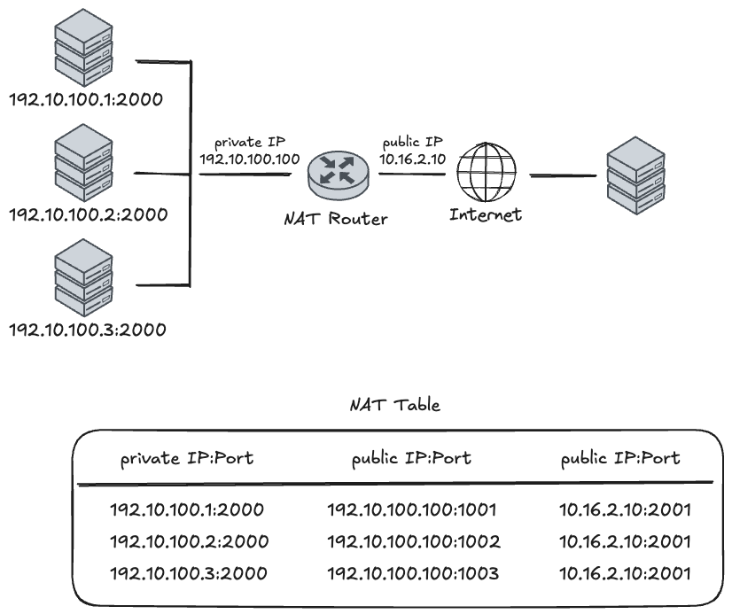

6-12. SNAT/DNAT란?
일단 SNAT, DNAT를 설명하기 전에 NAT에 대해서 먼저 설명하겠습니다.
NAT은 “여러 사설 IP를 적은 수(또는 한 개)의 공인 IP로 바꿔서 외부와 통신하게 해 주는 주소 변환 장치/기능”입니다.
[6-12-1] NAT가 왜 생겼는지
원래 IP 주소는 전 세계에서 고유해야 하는데, 인터넷 사용자가 폭발적으로 늘면서 IPv4 주소가 모자라기 시작했습니다.
동시에:
- 내부 망 구조를 자주 바꾸더라도, 외부에 보이는 주소 체계는 그대로 두고 싶고
- 내부 IP를 외부에 노출하고 싶지 않은(프라이버시·보안 측면) 요구도 있었습니다.
그래서 내부에서는 마음대로 쓸 수 있는 사설 IP(예: 10.x.x.x, 192.168.x.x)를 쓰고, 외부와 통신할 때만 NAT 장비가 사설 IP ↔︎ 공인 IP로 바꿔주는 구조가 등장했습니다.
[6-12-2] NAT의 기본 동작 개념
NAT는 일반적으로 경계 라우터(회사/집 안과 인터넷 사이)에 위치합니다.
- 내부 호스트에서 인터넷으로 패킷을 보냄 (출발지 = 사설 IP).
- NAT 라우터가 패킷을 보고, 출발지 IP(그리고 필요하면 포트)를 공인 IP(그리고 새 포트)로 바꿉니다.
- 외부 서버 입장에서는 “NAT 라우터의 공인 IP에서 온 트래픽”으로 보입니다.
- 응답 패킷이 돌아오면, NAT 라우터가 미리 기억해 둔 매핑 정보를 보고 다시 사설 IP(원래 호스트/포트)로 되돌린 후 내부에 전달합니다.
이때 매핑 정보(어느 내부 IP/포트가 어느 공인 IP/포트로 나갔는지)를 세션별로 가지고 있기 때문에, NAT 장비가 고장나거나 경로가 바뀌면 세션이 끊어지기 쉽습니다.
[6-12-3] 두 가지 전통적인 NAT 방식
“Traditional NAT”는 크게 두 종류입니다.
Basic NAT (주소만 변환)
- 여러 개의 사설 IP ↔︎ 여러 개의 공인 IP를 1:1 또는 N:M으로 매핑
- 패킷 변환 시 IP 주소만 바꿈 (TCP/UDP 포트는 그대로)
- 내부 호스트 수 ≤ 공인 IP 수라면, 각 내부 호스트가 공인 IP 하나씩을 “빌려 쓰는 느낌”
예:
- 내부: 10.0.0.0/16
- 외부: 198.76.29.0/24
- 10.0.1.5 → 198.76.29.7 이런 식으로 매핑
장점: 구조가 단순하고, 일부 프로토콜/애플리케이션에 덜 민감합니다
단점: 공인 IP를 여러 개 써야 해서 주소 절약 효과가 크지 않습니다
NAPT (Network Address Port Translation, 포트까지 변환)
우리가 흔히 말하는 “NAT”라고 하면 대부분 NAPT을 의미합니다.
- 여러 사설 IP가 하나의 공인 IP를 공유
- (사설 IP, 사설 포트) → (공인 IP, 공인 포트) 튜플로 매핑
- 내부 수십 대 PC가 하나의 공인 IP로 동시에 인터넷 접속 가능

Outbound: 사설 망에서 외부로 나갈 때
내부 호스트들이 외부 서버로 요청을 보낼 때, NAT 라우터는 고유한 식별을 위해 공인 IP 포트(Public Port)를 새로 할당합니다.
- 매핑 과정: 내부 호스트
192.10.100.1이 포트2000으로 요청을 보내면, 라우터는 이를 공인 IP10.16.2.10의 포트1001로 변환하여 기록합니다. - 튜플(Tuple) 생성: 테이블에는
(사설 IP:포트) ↔︎ (공인 IP:변환 포트)쌍이 생성되며, 이를 통해 하나의 공인 IP로 수많은 내부 장치를 구분할 수 있게 됩니다.
Inbound: 외부에서 응답이 돌아올 때
외부 서버는 응답을 보낼 때 목적지를 NAT 라우터의 공인 IP와 변환된 포트(10.16.2.10:2001)로 설정합니다.
- 역추적: NAT 라우터는 도착한 패킷의 포트 번호(
1001)를 NAT Table에서 조회합니다. - 최종 전달: 매핑된 정보를 확인한 후, 패킷의 목적지 주소를 다시 원래의 사설 주소인
192.10.100.1:2000으로 되돌려 내부 호스트에게 정확히 전달합니다.
[6-12-4] NAT의 장점과 한계
장점
- IPv4 주소 부족을 완화 (여러 사설 IP → 적은 수의 공인 IP).
- 내부 주소 체계 변경을 외부에 숨길 수 있어, ISP 변경·망 재구성 시에도 외부 영향 최소화.
- 어느 정도의 프라이버시: 외부에서는 내부 개별 호스트 주소를 알 수 없습니다.
한계·문제점
- End-to-end 특성 붕괴: IP 주소가 더 이상 “고정된 종단 식별자”가 아니게 됩니다.
- IPSec 같은 “끝단끼리 직접 인증/암호화” 모델과 충돌.
- 디버깅/보안 추적이 어려움: 로그를 NAT 매핑과 함께 봐야 “어느 내부 호스트”인지 알 수 있습니다.
- 세션 상태(state)를 NAT가 들고 있어서,
- NAT 장비가 죽거나
- 세션이 다른 NAT로 우회되면 → 기존 연결이 깨집니다
- 일부 프로토콜은 추가 장치(ALG) 없이는 잘 안 돌아가거나, 아예 설계상 NAT-unfriendly.
[6-12-5] 실제 어디서 쓰이는지
- 집 공유기, 카페·회사 AP: 거의 전부 NAPT 방식 NAT
- 기업 경계 라우터: 사설망(10.x, 192.168.x) ↔︎ 인터넷 사이의 주소 변환
- IDC/클라우드 내부: 특정 세그먼트 간, 또는 DMZ 구성 시도 NAT를 사용하기도 함
정리하면, NAT = 내부 사설 주소 체계를 외부에서 가리고, 부족한 IPv4 주소를 아끼기 위해 경계에서 IP(그리고 포트)만 바꿔 주는 중간 통역 장치라고 보면 됩니다.
SNAT과 DNAT은 “어느 주소를 바꾸느냐”와 “언제/어디에서 바꾸느냐”가 핵심입니다.

[6-12-6] SNAT (Source NAT)
SNAT은 패킷의 출발지(소스) 주소를 바꾸는 것입니다.
- 언제/어디서:
POSTROUTING체인에서, 패킷이 나가기 직전에 수행됩니다. 그래서 라우팅·필터링 같은 건 모두 원래 주소를 보고 처리한 뒤, 마지막에 주소만 갈아끼웁니다. - 용도: 사설 IP 여러 대가 하나의 공인 IP로 인터넷에 나갈 때 등, “내가 누구인 척 할지(출발 IP)”를 바꿔야 할 때 사용합니다.
- iptables 예시 (2.4 기준):
-
-t nat -A POSTROUTING -o eth0 -j SNAT --to 1.2.3.4
-
- Masquerade:
- 동적 IP(ADSL, PPPoE, 일반 모뎀 등)에서 쓰는 SNAT의 특수 버전.
-
--to-source에 IP를 안 적고, 나가는 인터페이스의 IP를 자동으로 사용. - 연결이 끊겼다가 새 IP로 다시 붙을 때, 기존 연결들을 정리해 줘서 깔끔함.
- 예:
-j MASQUERADE
요약하면, SNAT = “밖으로 나갈 때 내 IP(소스)를 뭘로 보이게 할까?”를 설정하는 것.
[6-12-7] DNAT (Destination NAT)
DNAT은 패킷의 목적지(데스티네이션) 주소를 바꾸는 것입니다.
- 언제/어디서:
PREROUTING체인에서, 패킷이 들어오자마자 수행됩니다. 그래서 이후 라우팅·필터링은 이미 바뀐 목적지 기준으로 동작합니다. - 용도: 포트 포워딩, 로드 밸런싱, 내부 서버로 트래픽 보내기 등 “이 패킷이 실제로 어디로 가야 할지(목적지 IP/포트)”를 바꿀 때 사용합니다.
- iptables 예시:
-
-t nat -A PREROUTING -i eth0 -j DNAT --to 5.6.7.8 - 웹 트래픽 포트 변경:
--dport 80 ... -j DNAT --to 5.6.7.8:8080
-
- REDIRECT:
- DNAT의 특수 버전으로, 들어온 인터페이스 자신의 주소로 보내는 편의 기능.
- 로컬의 프록시(예: squid)로 투명 프록시 구성할 때 사용.
- 예:
-j REDIRECT --to-port 3128
요약하면, DNAT = “들어오는 패킷을 실제로 어디 서버로 보낼까? (목적지 변경)”를 정하는 것.
정리 한 줄로 말하면,
- SNAT: 나갈 때 “누가 보낸 것처럼 보이게 할지” (Source, POSTROUTING)
- DNAT: 들어올 때 “어디로 보내 줄지” (Destination, PREROUTING)
위의 NAT 관련 글을 읽다 보면 자연스럽게 이런 의문이 들 수 있습니다.
“그러면 실제로 주소를 바꾸는 건 누가 하는 거지? IP/포트를 바꾸려면, 이 트래픽이 어디에서 와서 어디로 가는지에 대한 정보가 있어야 할 텐데, 이런 정보는 어디에 저장되어 있을까?”
[6-12-8] conntrack
리눅스 커널에서는 이 정보를 conntrack(커넥션 트래킹) 이라는 모듈을 통해 관리합니다.
조금 더 정확히 말하면, 리눅스에는 Netfilter라는 패킷 처리 프레임워크가 있고, 이 Netfilter가 커널 네트워크 경로에 여러 개의 “훅(hook)” 지점을 미리 심어 두고 있습니다.
Netfilter 훅이란 무엇인가?
훅은 쉽게 말해, 패킷이 커널 네트워크 스택을 지나가는 길목에 미리 설치해 둔 “검문소” 같은 것입니다.
패킷은 다음과 같은 순서로 커널을 통과합니다.
[ NIC 수신 ]
│
▼
(옵션) XDP/eBPF
│
▼
[ IP 계층 진입 ]
│
▼
┌───────────────────────────────┐
│ Netfilter 훅 지점들 │
│ (여기에 conntrack, NAT 등이 │
│ 순서대로 매달려 있다) │
└───────────────────────────────┘
│
▼
[ 라우팅 / 로컬 소켓 전달 ]
│
▼
[ 응답 패킷 생성 후 다시 Netfilter 훅들 ]
│
▼
[ NIC 송신 ]Netfilter는 이 안에 대표적으로 다섯 개의 훅 지점을 제공합니다.
PRE_ROUTING: 패킷이 IP 계층에 들어오자마자LOCAL_IN: 이 노드가 목적지인 패킷이 로컬 소켓으로 올라가기 직전FORWARD: 이 노드를 경유해 다른 곳으로 포워딩될 때LOCAL_OUT: 로컬 프로세스에서 나가는 패킷이 IP 계층을 통과할 때POST_ROUTING: 라우팅이 끝나고 실제로 NIC로 나가기 직전
각 훅 지점에는 여러 모듈(conntrack, NAT, iptables 등)이 우선순위에 따라 줄지어 등록됩니다.
예를 들어 LOCAL_OUT 훅은 개념적으로 다음과 같은 구조를 가집니다.
NF_INET_LOCAL_OUT 훅
├─ conntrack_in() ← conntrack 모듈 (먼저 실행)
├─ nf_nat_inet_fn() ← NAT 모듈 (그 다음 실행)
└─ iptables(filter 등) ← 방화벽/정책즉, 커널은 “이 지점에서 등록된 핸들러들을 순서대로 호출해 줌으로써” conntrack, NAT, iptables가 개입할 수 있는 타이밍을 제공하는 역할을 합니다.
conntrack: “연결 정보를 만들고 skb에 붙이는” 층
이제 NAT를 이해하기 위해 conntrack가 어떤 일을 하는지 조금 더 구체적으로 보겠습니다.
리눅스 커널에서 패킷 하나는 struct sk_buff(줄여서 skb)라는 구조체로 표현됩니다.
skb는 실제 패킷 데이터(헤더+payload)뿐 아니라, 이 패킷과 관련된 메타데이터를 함께 들고 다니는 컨테이너입니다. 그 메타데이터 중 하나가 바로 “이 패킷이 어떤 conntrack 엔트리에 속하는지”를 가리키는 포인터입니다.
PRE_ROUTING이나 LOCAL_OUT 같은 훅 지점에서 가장 먼저 호출되는 것이 nf_conntrack_in()입니다. 이 함수는 개념적으로 다음과 같은 일을 합니다.
- 패킷 헤더에서 5‑tuple(출발지 IP/포트, 목적지 IP/포트, L4 프로토콜)을 추출합니다.
- 이 5‑tuple을 키로 해서 conntrack 해시 테이블을 조회합니다.
- 이미 같은 튜플을 가진 엔트리가 있으면 그 엔트리(
struct nf_conn *ct)를 가져오고, 없다면 새로 할당해서 초기 상태/타임아웃 등을 설정한 뒤 테이블에 등록합니다. - 이렇게 얻은
ct포인터와 상태 정보(NEW, ESTABLISHED, RELATED 등)를skb의 메타데이터 필드에 붙여 둡니다.
개념적으로는 다음과 같습니다.
[ 패킷(skb) ]
│
└─ nf_conntrack_in()
├─ 튜플 추출
├─ conntrack 테이블에서 ct 찾기 또는 새로 생성
└─ skb에 ct 포인터와 상태를 저장
(nfct / nfctinfo 필드에 연결)이렇게 “붙여 둔” 덕분에, 이후에 다른 모듈(NAT 등)이 이 패킷을 처리할 때는 다시 튜플을 파싱해서 연결을 찾을 필요가 없고, nf_ct_get(skb, &ctinfo) 같은 헬퍼 함수로 이미 conntrack가 만들어 놓은 ct 엔트리와 상태 정보를 그대로 가져다 쓸 수 있게 됩니다.
NAT: conntrack 정보 + 규칙을 바탕으로 실제 주소를 바꾸는 층
conntrack가 먼저 일을 끝내고 나면, 같은 훅에서 그 다음 순서로 NAT 모듈이 호출됩니다 (nf_nat_inet_fn() 등).
NAT의 동작 흐름은 다음과 같습니다.
nf_ct_get(skb, &ctinfo)를 호출해서, conntrack가skb에 붙여 둔ct엔트리와 상태(NEW/ESTABLISHED/등)를 가져옵니다.iptables NAT 규칙(SNAT, DNAT, Masquerade 설정)을 보고,
“이 connection에 대해 어떤 형태의 NAT를 적용해야 하는지”를 결정합니다.
이 결정 내용을
ct와 NAT 전용 상태에 기록해 둡니다.(예: 이 플로우는 출발지 IP/포트를 어떤 값으로 바꿔야 하는지)
마지막으로 현재 처리 중인
skb의 IP/포트 헤더를 위에서 정한 매핑에 따라 실제로 변경합니다.
이 과정을 텍스트로 시각화하면 다음과 같은 파이프라인이 됩니다.
[ LOCAL_OUT 훅에 도달한 패킷 (skb) ]
│
├─ conntrack_in()
│ ├─ 튜플 추출 (src/dst IP, src/dst port, proto)
│ ├─ conntrack 테이블에서 ct 엔트리 조회/생성
│ └─ skb.nfct / skb.nfctinfo에 ct 포인터와 상태 기록
│
├─ nf_nat_inet_fn()
│ ├─ nf_ct_get(skb, &ctinfo)로 ct 가져오기
│ ├─ NAT 규칙(SNAT/DNAT/masq)을 보고,
│ │ 이 connection에 대한 NAT 매핑 결정
│ ├─ 그 매핑을 ct/NAT 상태에 저장
│ └─ skb의 IP/포트를 매핑에 맞게 실제로 변경
│
└─ iptables(filter 등)로 최종 ACCEPT/DROP/LOG 등 판정이후 같은 connection에 속한 패킷이 다시 들어오면:
conntrack는 같은 튜플을 기반으로 동일한
ct엔트리를 찾아skb에 붙여 주고,NAT는 그
ct에 이미 저장된 NAT 매핑을 그대로 재사용함으로써,한 connection 동안 주소 변환이 항상 일관되게 유지되도록 합니다.
결론
이제 처음 질문으로 돌아가서, 이렇게 정리할 수 있습니다.
- 주소를 바꾸기 위해서는 “이 패킷이 어떤 연결에 속하는지”와 “그 연결에 대해 어떤 NAT 정책/매핑이 적용돼야 하는지”라는 정보가 필요합니다.
- 리눅스에서는 이 정보를 conntrack가 튜플과
ct엔트리 형태로 관리하고, 패킷 단위로는 이ct포인터를skb에 붙여서 넘깁니다. - Netfilter 훅은 conntrack와 NAT가 이런 작업을 수행할 수 있는 타이밍을 제공하는 “검문소” 역할을 합니다.
- NAT는 바로 이
ct정보와 iptables NAT 설정을 기반으로, 각 패킷의 IP/포트를 실제로 바꾸는 마지막 단계를 담당합니다.
따라서, 리눅스 커널에서 NAT의 동작 원리를 한 줄로 요약하면 다음과 같습니다.
“Netfilter 훅 위에서 conntrack가 먼저 ‘연결 정보를 만들고 skb에 붙여 두고’, NAT가 그 정보를 기반으로 일관된 SNAT/DNAT를 수행한다.”
참조
RFC 3022 - 전통적인 IPv4 NAT 정의 문서